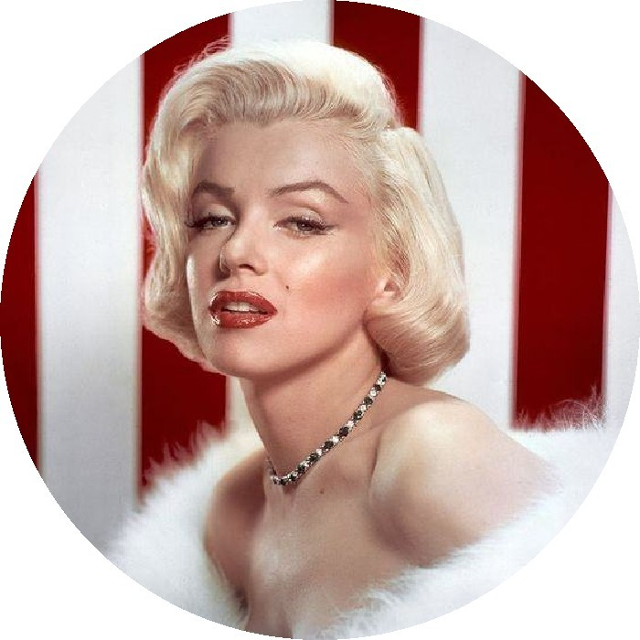
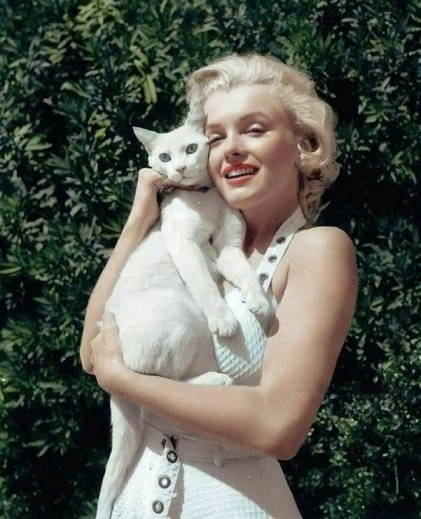

Мерэлин Монро
Мерэлин Монро - легенда Голливуда
- Монро настолько любила литературу, что собрала личную библиотеку из более чем 400 книг, включая произведения Хемингуэя, Толстого и Джойса.
- Платье, в котором она спела «Happy Birthday, Mr. President» на день рождения Джона Кеннеди, было продано за рекордную сумму в 4,8 миллиона долларов. Нажмите, чтобы увидеть!
- Её звезда на Аллее славы Голливуда была открыта в 1960 году.
- Мэрилин трижды выходила замуж: Первый раз в 16 лет за Джеймса Догерти, чтобы избежать возвращения в приют. Этот брак распался через четыре года. Второй брак с легендой бейсбола Джо Ди Маджо в 1954 году был страстным, но недолгим (продлился лишь 9 месяцев), отчасти из-за его ревности и несогласия с её карьерой. Третий её муж — драматург Артур Миллер, за которого она вышла замуж в 1956 году. Однако через пять лет этот союз тоже закончился разводом.
Биография легенды Голливуда
Мэрилин Монро (Норма Джин Мортенсон) (1926-1962) – актриса кино, певица.
Родилась Норма Джин в Лос-Анджелесе 1 июня 1926 года. Первые шесть лет в биографии Мерилин Монро были проведены в приемной семье. Так и не закончив обучение, вышла замуж за Джима Догерти.
Недолго проработала на авиационном заводе, после чего посвятила себя модельному бизнесу.
В 1946 году в биографии Мерилин Монро произошло важное событие – она стала сотрудничать с киностудией «Двадцатый век Фокс». Тогда же взяла имя Мэрилин и бабушкину фамилию. Но получить полноценную роль ей удалось не сразу.
В 1948 году на студии «Коламбиа Пикчерс» был снят первый в биографии Мэрилин Монро фильм, где актриса полностью проявила себя. За год до этого она впервые снялась в небольших сценах в фильмах «Ужасная мисс Пилгрим», «Скуда-у! Скудда-эй!». А вот главная роль ей впервые досталась в киноленте «Асфальтовые джунгли».
Известна актриса также благодаря своим романам.
В 1954 году в биографии Монро состоялась свадьба с драматургом Артуром Миллером. Мэрилин прожила с ним 4 года. Нашумевшая любовная история Монро и Джона Кеннеди началась в 1961 году, однако, их связь считают слухами, которые не имеют доказательств.
Одни из самых популярных фильмов в биографии Мерилин Монро: «В джазе только девушки», «Семь лет желания» и другие.
